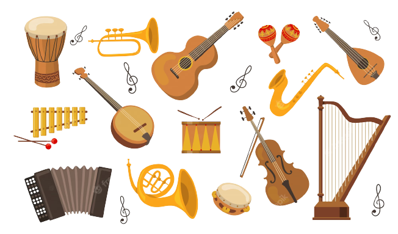

It's easy to play any musical instrument,
all you have to do is touch the right key at the right time and the instrument will play itself.
-Johann Sebastian Bach
We send weekly info on email about:
- Deals we've found just for you!
- Tips and tricks about ALL types of instruments!
- Information about popular artist and bands!
- Free music copies and tabs!
- Videos by professionals talking through high level skills
Instrument Families

- A melodic instrument for the most part, the flute has a clear and bright sound with a distinctive warmth, refinement, and subtlety to its tone. Another feature of the flute is the use of expensive materials such as gold, silver, and gems in its manufacture.
- Oboes, whose name comes from the French for "high-pitched wood," are excellent for solo performances with many notes in high ranges. The oboe is extremely difficult to play.
- The appeal of the clarinet is its rich variety of expression, which ranges from a light timbre to a deep mysterious timbre. It also boasts a register of approximately four octaves—the largest of any wind instrument.
- From deep resounding low notes to sweet melodies, unhindered expression. The long, wide wooden pipe of the bassoon contains much wisdom.